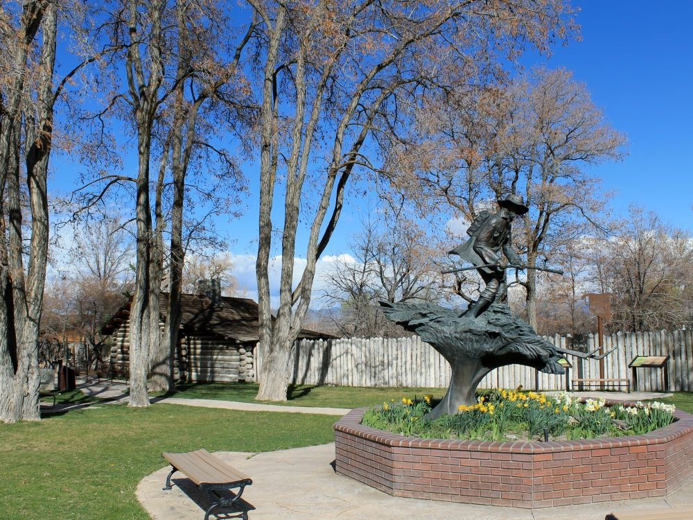

Historic park featuring a reconstructed 1851 trading post, pioneer-era museum, and shaded picnic grounds commemorating Nevada’s first non-native settlement.
General Information
Museum (May–Sept): Daily 10am to 4pm
Museum (Oct–Apr): Thursday to Monday, 11am to 3pm
Museum admission: $1
Children 12 and under: Free
How to Get There
From Carson City (14 mi): Take US-395 S to Genoa Lane, turn right and continue west into Genoa; the park is located on Main Street in the center of town.
Overview
Mormon Station State Historic Park in the town of Genoa preserves the site of the first permanent non-Native settlement in what is now Nevada. In 1851, Mormon traders built a stockade and trading post here to serve emigrants crossing the Sierra Nevada on the California Trail, and the settlement became an important stopping point for gold seekers, freighters and travelers. The park's reconstructed stockade and museum interpret frontier life, the history of the Carson Valley and the early development of Nevada. Visitors come for the history, the shady grounds, the charm of Nevada's oldest town and the nearby mountain scenery.
Access
Mormon Station is on Main Street in the heart of Genoa, at the base of the Sierra Nevada about 14 miles south of Carson City. Most visitors arrive by car, either on US-395 and Genoa Lane from Carson City and Minden or via NV-206 from Gardnerville. The park is roughly 20 miles from South Lake Tahoe over Kingsbury Grade, and it is about an hour's drive from Reno. Parking is available near the park, and the compact grounds can be explored on foot.
Seasons
The park grounds are open year-round, while the museum has seasonal hours, with longer hours in summer and a shorter schedule from fall through spring. Summer is warm and pleasant, with shaded lawns that make good picnic spots. Fall brings golden cottonwood color and the popular Candy Dance Arts and Crafts Faire in late September, which draws large crowds to Genoa. Winter can be cold with snow in the surrounding mountains, and spring is a quiet time to visit as the valley greens up.
Things to Do
Step Into Nevada's First Settlement
Mormon Station State Historic Park marks the beginning of permanent settlement in Nevada and gives a vivid look at the Gold Rush era. The reconstructed stockade and shaded grounds set the scene for the stories of the people who passed through.
Tour the Mormon Station Museum
The museum displays artifacts, photographs and exhibits about the Mormon traders, emigrants, Washoe people and early settlers of the Carson Valley. It is a small museum, but it gives a good introduction to the area's pioneer history.
Walk Through the Historic Town of Genoa
The park sits in the center of Genoa, whose Main Street is lined with historic buildings, small shops and the old Genoa Bar, billed as Nevada's oldest thirst parlor. A short walk makes it easy to combine the park with a larger tour of the town.
Attend a Local Festival
Genoa hosts events throughout the year, including the Candy Dance Arts and Crafts Faire, which has been held for more than a century. Check the park and town calendars for special events and living history programs.
Enjoy a Picnic Under the Trees
Shady lawns and picnic tables offer a pleasant place to relax with views toward the Carson Range. The setting is calm and well suited to families and travelers on a driving tour of the Eastern Sierra.
Top Trails
Mormon Station Grounds Walk
Length: Less than 0.25 miles
Elevation Gain: Minimal
Difficulty: Easy
A short walk around the grounds leads past the reconstructed stockade, interpretive signs and shaded lawns. It is accessible for visitors of all ages and takes only a short time.
Genoa Historic District Walk
Length: Approximately 1 mile round trip
Elevation Gain: Minimal
Difficulty: Easy
This stroll along Main Street and neighboring lanes passes historic buildings and small shops. Interpretive plaques describe Genoa's role in Nevada's early settlement, and the Carson Range makes a scenic backdrop.
Visitor Centers
Mormon Station does not have a separate visitor center. The museum, located within the reconstructed stockade, serves as the park's information point and has staff or volunteers who can answer questions and provide brochures during open hours. The Genoa town area and the Carson Valley visitor resources in Minden and Gardnerville offer maps and local information. Because the museum's hours change by season, check the Nevada State Parks website before visiting.
Camping and Lodging
There is no camping or lodging in the park, but Genoa and the Carson Valley have a range of options. In Genoa itself, small inns and bed-and-breakfasts such as the Genoa House Inn offer a historic atmosphere. Minden and Gardnerville, about 10 minutes away, have chain hotels and the Carson Valley Inn, and Carson City, about 30 minutes away, has a wider selection including the Carson Nugget. Within about 45 minutes, South Lake Tahoe and Stateline offer casino resorts and lake lodging, and Reno is about an hour away. Campgrounds can be found at Lake Tahoe Nevada State Park and in the surrounding national forest. Check each property's website for current availability.
This article uses material from the Wikipedia article and official pages for Nevada State Parks: Mormon Station, Travel Nevada, released under the Creative Commons Attribution-Share-Alike License 3.0.
